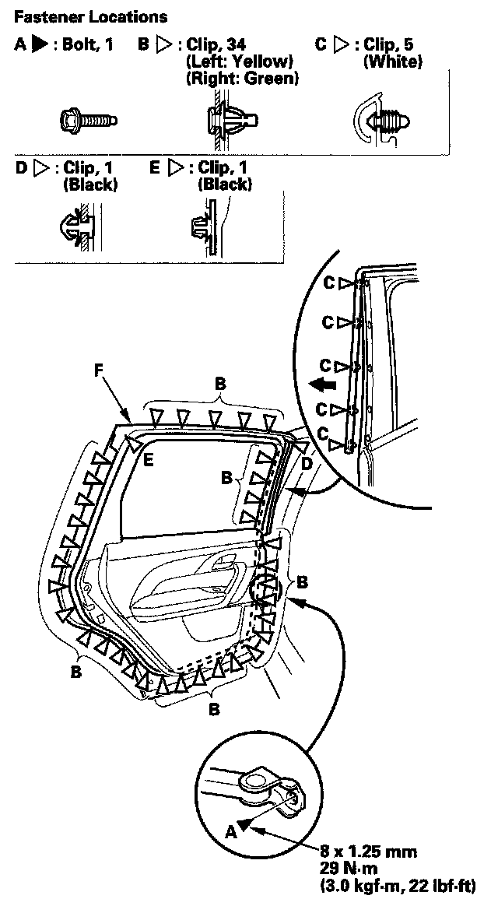

Rear Door Weatherstrip
Rear Door Weatherstrip ReplacementNOTE:
- Put on gloves to protect your hands.
- Take care not to scratch the door.
- Use a clip remover to remove the clips.

1. At the B-pillar, remove the door checker mounting bolt (A).
2. Detach the clips (B, C, D, E), then remove the door weatherstrip (F).
3. Install the weatherstrip in the reverse order of removal, and note these items:
- If the clips are damaged or stress-whitened, replace them with new ones.
- Apply medium strength type liquid thread lock to the door checker mounting bolt before installation.
- Check for water leaks.